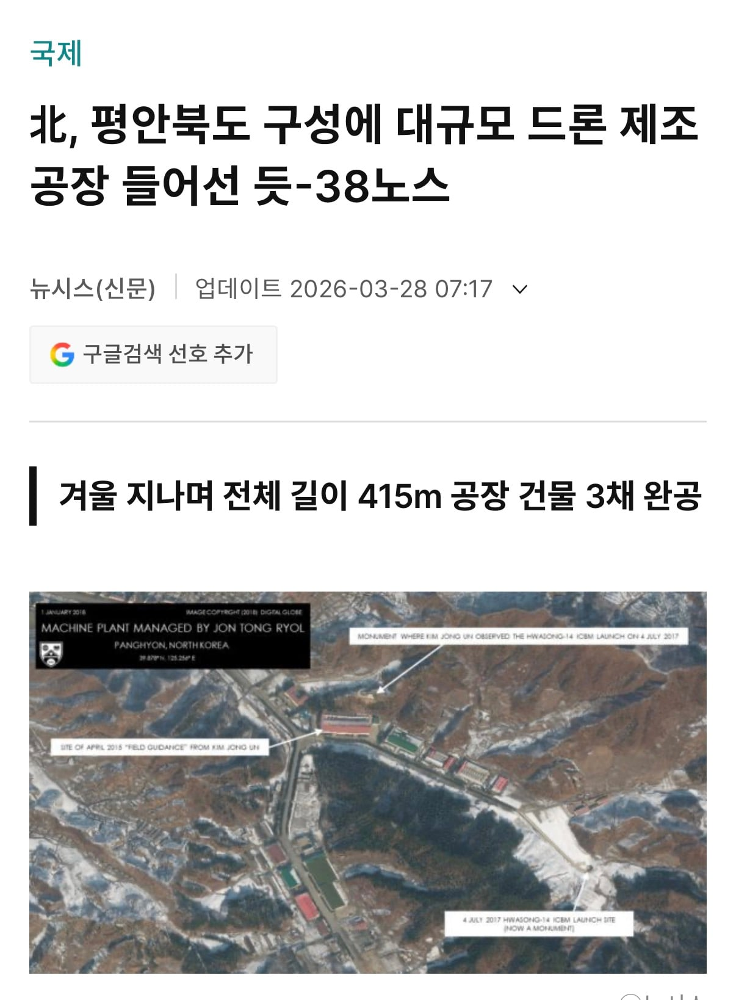
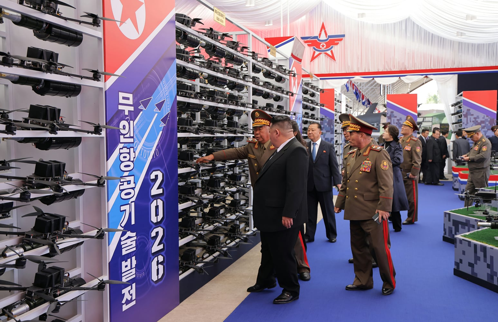
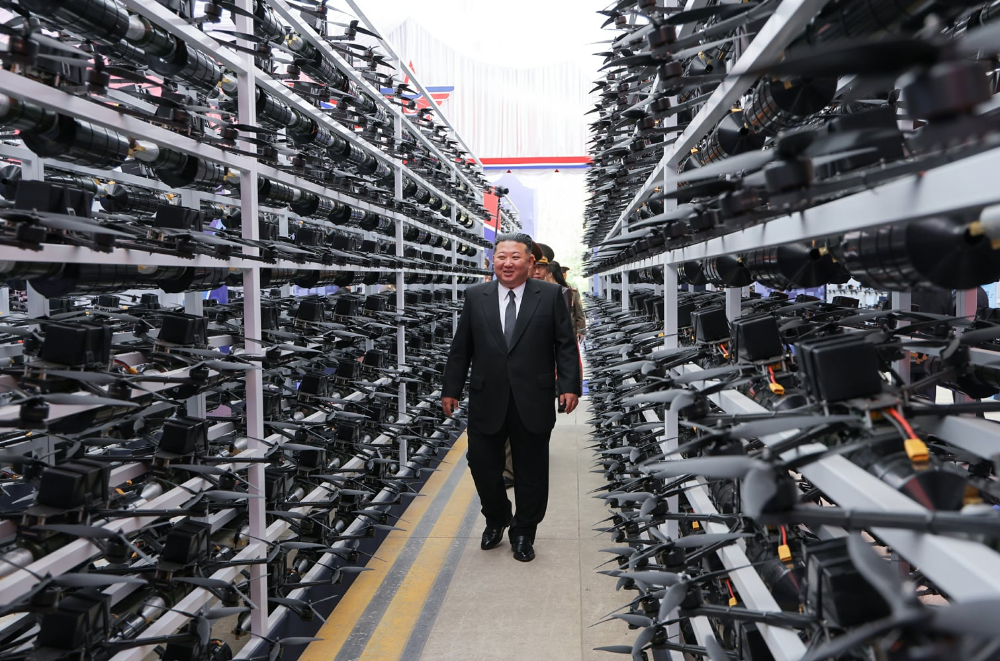
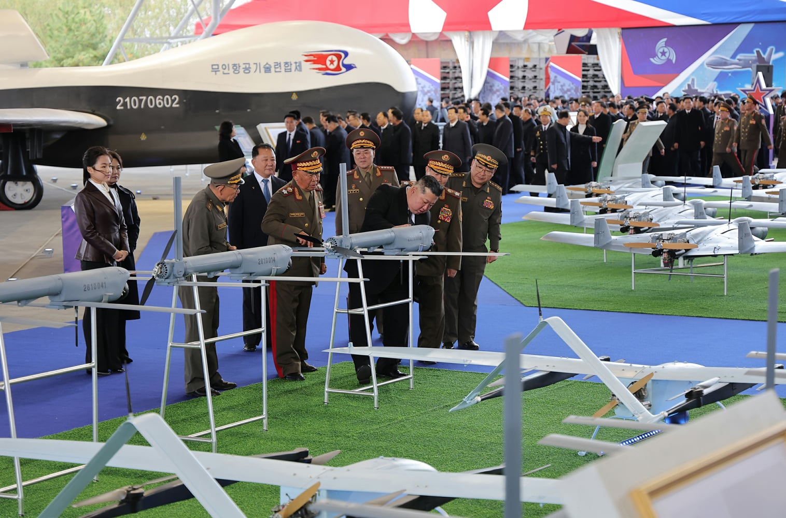
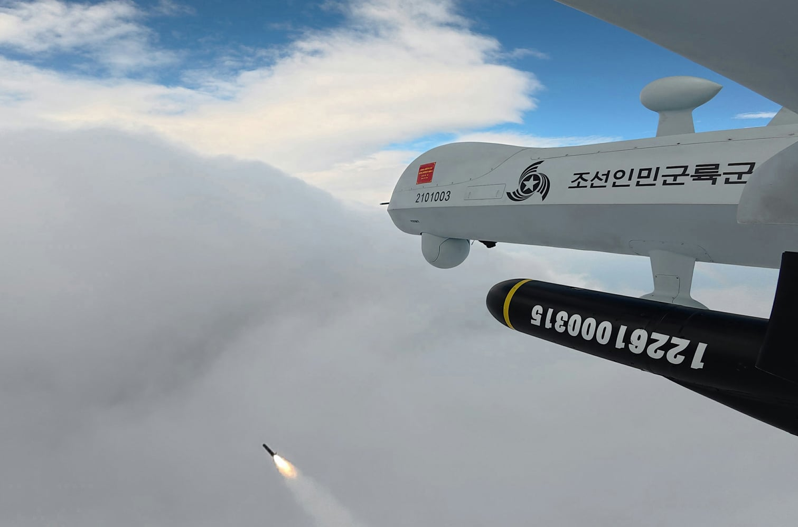

북한은 러우전쟁 참전 대가로 러시아로부터 대규모 드론생산 기술을 전수받아 평안북도 구성에 대규모 생산공장을 구축함.
또한 인력 1만명을 러시아에 파견해서 드론 생산기술을 배워오게 함.
그 결과, 자폭드론과 무인폭격기의 자체 생산망을 완성시키고
방산전시회에서 드론 인해전술과 정밀폭격 능력까지 보여주는 중





북한은 러우전쟁 참전 대가로 러시아로부터 대규모 드론생산 기술을 전수받아 평안북도 구성에 대규모 생산공장을 구축함.
또한 인력 1만명을 러시아에 파견해서 드론 생산기술을 배워오게 함.
그 결과, 자폭드론과 무인폭격기의 자체 생산망을 완성시키고
방산전시회에서 드론 인해전술과 정밀폭격 능력까지 보여주는 중
고생 많다. 여기는 그냥 국군은 무능하고 드론에는 무조건 당하는 거고, 완벽하지 않으니깐 안되고 언급 안하는 척 하면서 지금 윗대가리들은 무조건 나쁜 놈들이어야 하는 곳이라 이런 말 하기 쉽지 않을건데. 여튼 좋은 정보 고맙다.
한쪽은 몇십만명이 죽어간 전쟁데이터의 결정체를 동맹에 공유하고 체질완전개선함. 한쪽은 세상바뀌는거 모르고 그시간에 공유할 수 있는 국가 괴롭히기바쁨
이럴수가 너무했네 대한민국은 당장 국가 차관 50조 달러를 구상해서 우크라이나에 긴급지원하라!!! 물론 쥐좃만큼 지원했다고 욕처먹겠지만. 그래도 드론 조작법이라도 배워오자.
라바에서 변태하는거 맞지?
어허 방어용
우크라 지원해주고 드론기술 받아와야할듯
진짜 전쟁나면 국군은 러시아처럼 줘터지고 병신될거같음
그냥 러시아랑 화해하고 우리도 드론 기술 받자
원래 사이 좋았잖아?
아 진짜 온갖 근들갑이란 들갑은 다떨어서 전쟁터지면 진다 소리까지 나오네 답도 없는 새끼들
쟤네 미사일도 다 러시아 주고 있는 무기도 탈탈 털어서 러시아 갖다줬는데
군사들까지 러시아 줌
그걸로 평양시내 아메리카노 파는거 보여주니 존나 잘사네 소리 하고
드론 몇대 보여주니 우리 전쟁에서 지겠네 소릴 아무 생각없이 내뱉음
ㅋㅋㅋ 답대가리가 없다 이새끼들은 저걸 한국이랑 싸울때 쓸까? 지들 군사 공백 목적의 위세로 쓸까
우리 이미 드론용 레이저 만든게 몇달 전일텐데
‘천광’은 지난 9월 육군 승진훈련장에서 열린 ‘2026 국방 드론 기술전’에서도 드론 4대와 무인기 2대를 연속으로 100% 요격하는 성과를 거둔 바 있다. 당시 한화시스템은 해외 고객을 겨냥해 개발 중인 ‘50kW 레이저 장갑차’를 함께 선보여 큰 호응을 얻었다. ‘50kW 레이저 장갑차’는 해외 고객의 요구사항을 반영해 기동성과 출력을 동시에 향상시킨 차세대 레이저 솔루션으로 2027년까지 개발할 예정이다.
우리나라는 대드론기술도 없고 드론 운용 기술도 별로 발달하진 않음. 드론 운용이 까다로운 밀도 높은 산간지형에 북한 경계지역까지 포격이 쉬운 범위라 드론 별로 중요하게 안보는 입장임. 북한이 드론 제대로 굴리려면 넓은 평야나 시가전까지 와야하는데, 북한이 그 정도까지 내려왔으면 우리나라가 사실상 전쟁 졌다고 봐야지. 대신 소형자폭드론이 아니라 샤헤드 같은 고정익대형드론으로 탄약고나 기지에 계속 꼬라박으면 그거는 피해가 크니까 대응을 제대로 해야할듯
김정은도 승계하려고 서해에서 도발 엄청 했었고 (해전, 천안함, 연평도)
김주애가 등장한 이상 또 비슷한 식으로 사건사고 많이 일으킬듯
무슨짓을 벌여서 10대 여자애 우상화 시킬지 감도 안오네
ㅂㅅ새기 존나지겹네 러시아도 드론 미사일에 넣을 반도체없어서 플스 뜯어서 넣는대 북한이 퍽이나 대량으로 만들어서 쓰겟다 ㅋㅋ 중국한테 받아쓰는게 백만배 더 이득일건데
발칸포로 다 맞추면됨 ㅎㅎ
전쟁나면 저 공장에 현무부터 쳐박고 시작하겠지
지상에 저렇게 티나가 짓는다는건 이미 갱도속에도 여러군데 만들어놨다는거 아닐까
천광의 힘을 보여줄때다
드론으로 지랄하면 우린 더 높은 하늘에서 지랄하면 됨.
쟤들 위성문제로 장거리 운용은 못하고 단거리에서만 운용하려나
우리는 개씹틀딱뒈질새끼들때문에 드론기술 후퇴했는대
이제 또 이거 보고 화들짝 놀라서 밑에 애들 족칠 예정
존나 깔아둔다는거 보면 우리나라 산업 안죽었구나 아직